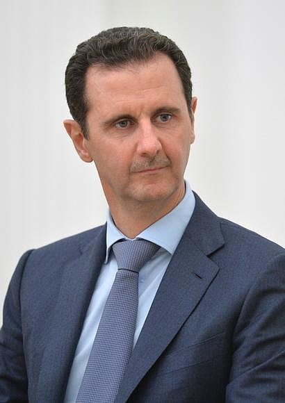

Syrien, officielt Den Syriske Arabiske Republik, er et land i det vestlige Asien, der grænser op til Libanon og Middelhavet mod vest, Tyrkiet mod nord, Irak mod øst, Jordan mod syd og Israel mod sydvest. Israel har siden seksdageskrigen i 1967 besat Golanhøjderne i den sydlige del af Syrien. Landets hovedstad Damaskus er blandt de ældste kontinuerligt beboede byer i verden. Syrien består hovedsageligt af bjerge og sletter, der breder sig over tre-fjerdedele af landet. Slette- og bjerglandskab ligger midt i landet, mellem det fugtige kystklima i vest og de halvtøre ørkenområder i den sydlige del af landet. Det rummer adskillige etniske og religiøse grupper, inklusive kurdere, armeniere, assyrere, tyrkere, kristne, drusere, alawitiske shiaer og arabiske sunnier.
I 1970 kom Hafez al-Assad fra Det Arabiske Socialistiske Ba'ath-parti til magten ved et ikke-blodigt militærkup. Det autoritære regime har haft kontrol siden og da præsidenten døde i 2000 overtog hans søn Bashar al-Assad præsidentembedet. I 1976 blandede Syrien sig i den libanesiske borgerkrig. Først i 2005 trak Syrien sine tropper ud af landet efter pres fra det internationale samfund og den libanesiske opposition.
Formelt set, er Syrien en parlamentarisk republik, men i praksis har landet fungeret mere som et autoritært regime. Magten er hovedsageligt koncentreret hos præsidenten og hans nærmeste rådgivere fra militæret og sikkerhedspolitiet. Oppositionen er undertrykt, og der er meget lidt respekt for menneskerettighederne. Syrien har siden 1979 været på den amerikanske terrorliste og de amerikanske myndigheder har også pålagt en handelsembargo mod Syrien. Grunden til dette er, at præsidenten er anklaget for at støtte den libanesiske shia-muslimske militære organisation Hizbollah.
Syriens økonomi og handel er primært baseret på landbrug, industri og olie. Olie er landets vigtigste indtægtskilde. Tidligere importerede Syrien hovedsagelig råvarer fra andre lande, men i dag, på grund af regeringens øgede investeringer i landbrugssektoren, er produktion og eksport af Syriens egne landbrugsprodukter som bomuld, frugt og grøntsager steget. Meget af Syriens virksomhed, herunder olieproduktion, ejes og kontrolleres af staten. Siden 1990'erne har myndighederne gradvist forsøgt at reformere og liberalisere økonomien, men indtil videre har de ikke formået at blive en integreret del af det globale verdensmarked. Arbejdsløsheden blandt befolkningen ligger på omkring 48,6 procent.
I flere syriske byer blev der, som en del af det arabiske forår i 2011, arrangeret protester. Protesterne havde i begyndelsen karakter af en fredelig protest imod menneskerettighedskrænkelser, manglende indflydelse, manglende økonomiske muligheder og fire årtiers autoritært etpartistyre under Ba'ath-partiet og dets ledere, først Hafez al-Assad 1971-2000 og siden 2000 hans søn Bashar al-Assad. Det syriske regime slog hårdt ned på demonstranterne fra begyndelsen, og måneder inde i revolutionen omringede styret byer og angreb med artilleri, mens det væbnede oprør blev dannet – det oprør, der spreder sig og nu kæmper mod regimets hær og militser. Syriens blodige borgerkrig har kostet over 170.000 mennesker livet og 2,9 millioner syrere er flygtet ud af landet, halvdelen af dem er børn.